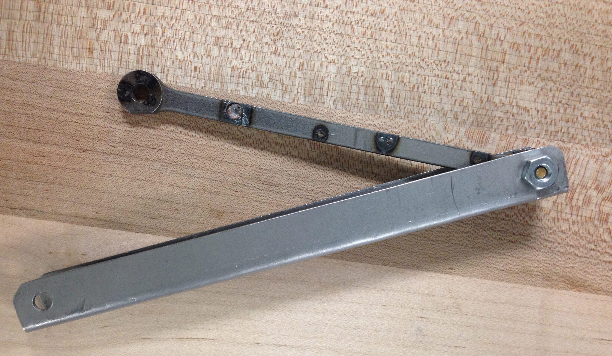
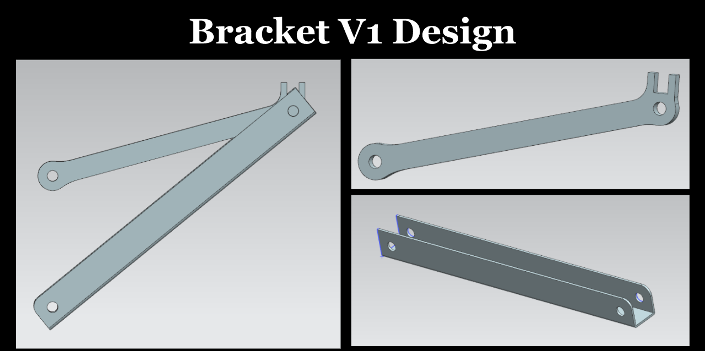
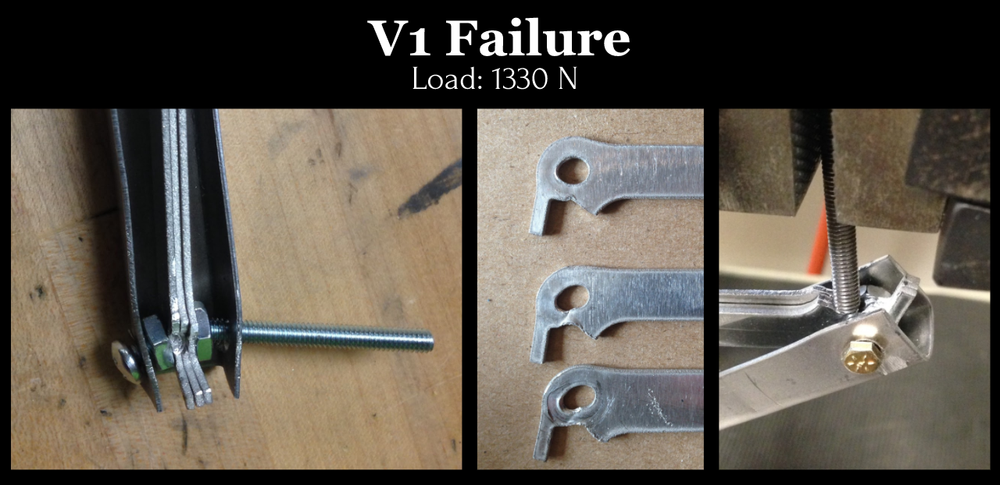
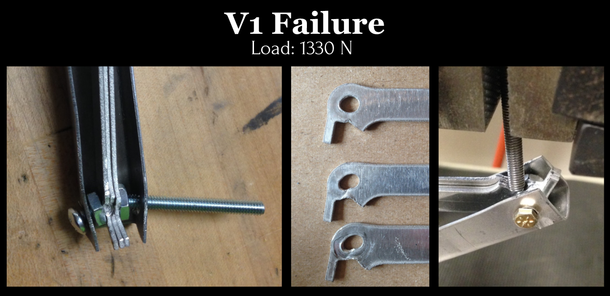

Loaded Bracket Design
A 4-person, 10-week project which designed and tested a 2-member bracket to fail mechanically at a target load.
- Executed calculations to predict mechanical failure modes
- Fabricated bracket using shop equipment (ex. spot welding)
- Analyzed the results of each iteration to find further improvements that could be made
My Role

The Starting Point: Design Challenge
The goal was to design a two-member bracket with specific geometric properties to fail a load within 2000-2500N. We applied the load at a predetermined location and predicted the failure mode (tension, compression, buckling, excessive deformation). A secondary priority was placed on efficiency with minimum weight of material.
Conceptual Design: Failure Mode Calculations
To eliminate bending moments, we designed the bracket to contain only two-force members by attaching the two free endpoints to coincide with the loading point. We determined the bracket details (such as material thickness and a U-shaped cross section) through iterations of calculations to insure a tensile failure.

free body diagram of concept where load coincides with end points of both members

initial design dimensions
First Iteration: Bracket V1
The first design consisted of a U-shaped bottom member and a 3-sheet top member, both aluminum. We bent sheet metal for the bottom and cut sheets using the water jet for the top. Failure occurred at a lower load than predicted at the bolt where loading took place, which was also not the intended failure mode. Stress concentrations at pins and a weak bolt contributed to Bracket V1's premature failure.
 

Second Iteration: Bracket V2
We made the following changes for the 2nd design, Bracket V2:
- welded extra material to pin holes to address stress concentrations
- changed material of top member to steel for welding
- changed from 3 sheets to 2 sheets for top member
- made bottom member more narrow for easier fitting in test apparatus
Only spot welding was available, and heating the material too much resulted in material melting away creating weaker spots. Failure occurred prematurely at a spot weld which was expected due to nonuniform sress distributions. The premature failure is likely not because of a design flaw, but due to manufacturing error. For future iterations, we would like to test the same design with a better welded top member.